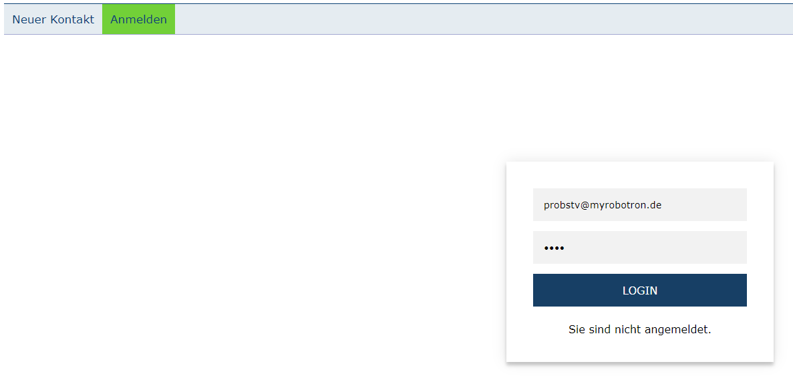
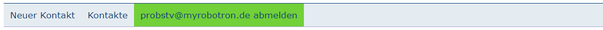

Uneingeloggt kann ausschließlich das Kontaktformular "Neuer Kontakt" oder die "Anmelden"-Seite aufgerufen werden. 
Sobald der User seine vom Admin zugeteilten Zugangsdaten eingibt, und auf Login klickt, wechselt er in den angmeldteten Zustand. Nun stehen im zu verfügung:

Über den Reiter Kontakte, falls angemeldet, über die Navigationsleiste erreichbar. Es werden alle vorhandenen Datensätze angezeigt.
Suchfunktion:
z.B.
Über den Details-Eingabeknopf der Kontakte-Tabelle erreichbar. So lassen sich genaue gespeicherte Daten zu einem einzelnen Kontakt einsehen.
Von dieser Ansicht lassen sich Datensätze Löschen oder Bearbeiten, jeweils über den entsprechenden Eingabeknopf.
Es lassen sich die Datensätze als .csv Tabelle herunterladen. Der Export-Eingabeknopf auf der Kontakte Ansicht, generiert diese Tabelle und lädt sie herunter.